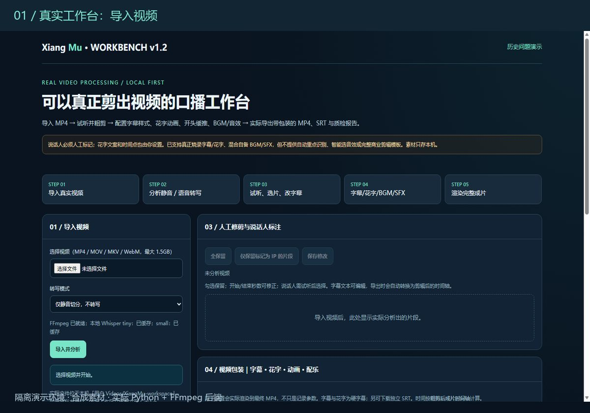
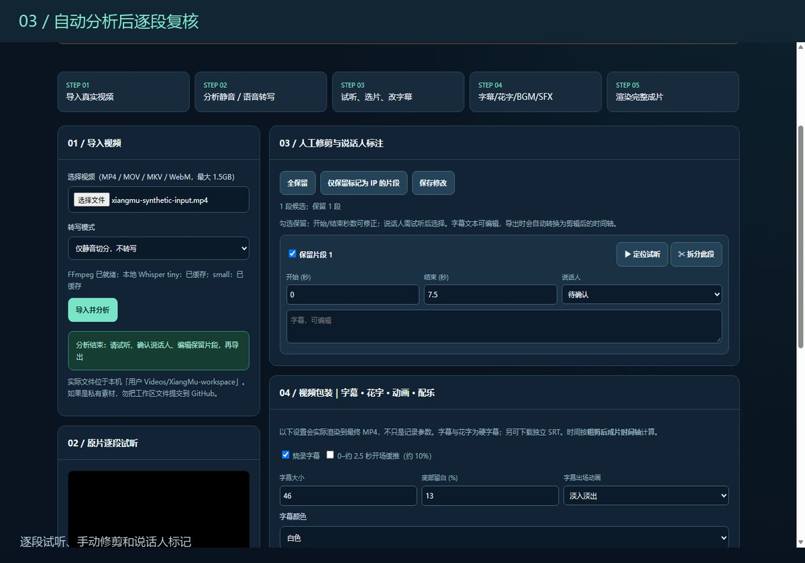
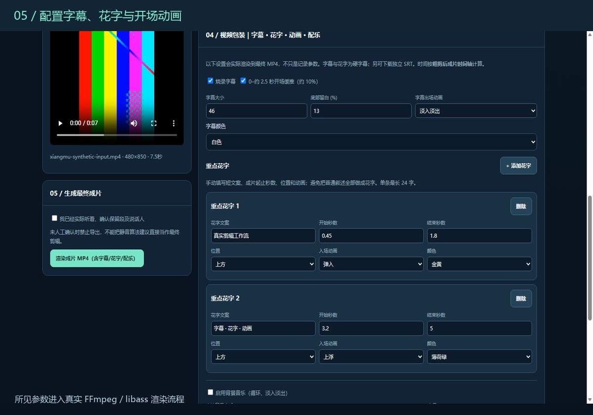
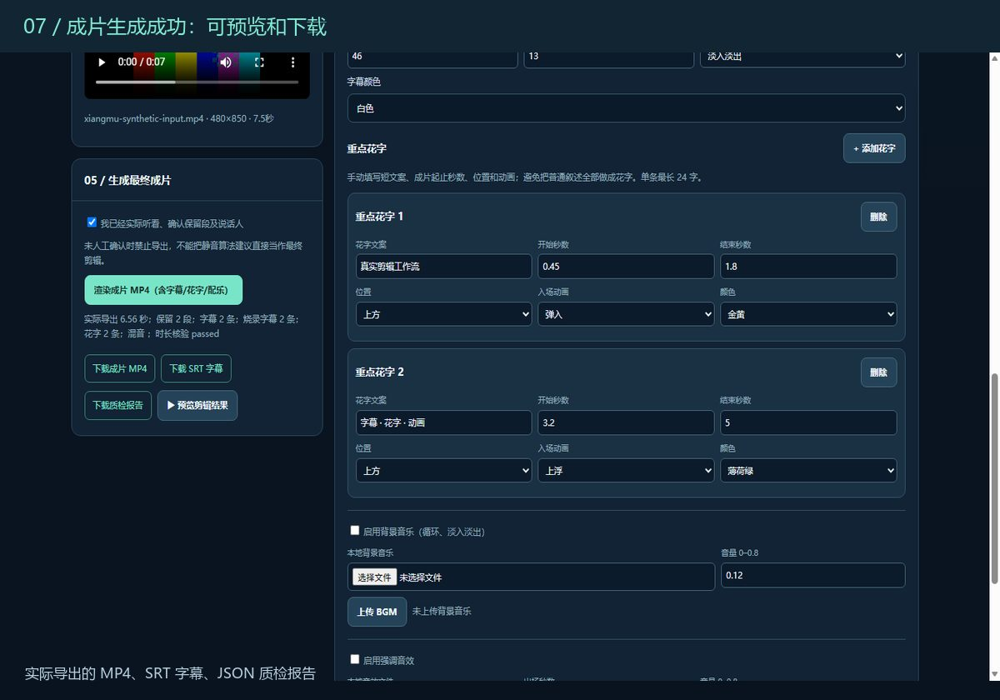

01 / 操作过程 15.8 秒｜实际页面状态逐步截帧
实际运行记录。 展示真实浏览器工作台在每一步操作后的状态，按顺序剪辑成短视频；不是连续实时录屏，也不是模拟软件界面。
以下不是一张静态效果图。我们在独立运行的 Xiang Mu 工作台中，用无版权合成素材走通了「导入 → 分析 → 人工调整 → 字幕与花字 → 真正导出 MP4」的流程。
直接播放下方视频：左边看工作台操作过程，右边看实际生成的成片。
四个关键页面状态来自本地实际运行的浏览器，不用静态图片伪装成可操作的在线服务。

选择测试视频、检查 FFmpeg 状态、启动处理任务。

分析后检查片段，调整保留区间和说话人信息。

配置字幕文案、重点花字时机和画面效果，保存包装参数。

生成实际 MP4、SRT 和质检报告，提供视频预览与下载。
这个网址采用 GitHub Pages 静态托管，用于长期展示项目；真正的视频处理需要 Python + FFmpeg 后端。为避免假装是在线剪辑器，这里展示真实操作过程与生成结果，**不提供无效的上传按钮**。
如果需要亲手操作，可查看公开源码仓库中的 Windows 启动说明；在自己的电脑安装 Python 与 FFmpeg 后运行。